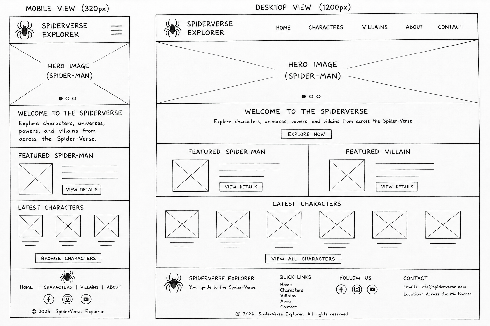

Site Name
SpiderVerse Explorer
This name represents a website dedicated to exploring Spider-Man characters, their universes, allies, and villains. It is memorable, descriptive, and reflects the educational purpose of the website.
Optional Domain: spiderverseexplorer.com
Site Purpose
SpiderVerse Explorer is an informational website that allows visitors to learn about Spider-Man characters, their powers, universes, allies, and villains. The website will dynamically display data from a JSON file using JavaScript and provide an interactive browsing experience.
Scenarios
- Which Spider-Man version has the strongest abilities?
- Who are Spider-Man's most famous villains?
- Which universe does Miles Morales belong to?
- What powers make Spider-Gwen different from Peter Parker?
Color Scheme
| Color | Hex | Usage |
|---|---|---|
| Spider Red | #C8102E | Buttons, headings, accents |
| Midnight Blue | #0A1F44 | Navigation, footer, page background |
| White | #FFFFFF | Main content |
| Light Gray | #F3F3F3 | Cards and sections |
Typography
-
Bebas Neue
Used for page titles and headings. -
Roboto
Used for paragraphs, navigation, buttons, and cards.
Wireframe
The following wireframes represent the planned layout of the home page for both mobile and desktop devices.
